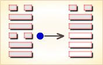

周易第58卦_兑卦(兑为泽)_兑上兑下
如有疑问互相交流，微信：470283584
周易第58卦详解
兑卦原文
兑。亨，利，贞。
象曰：丽泽，兑。君子以朋友讲习。
白话文解释
兑卦：亨通。吉利的贞卜。
《象辞》说：本卦为两兑相叠，兑为泽，两泽相连，两水交流是兑卦的卦象。君子观此卦象，从而广交朋友，讲习探索，推广见闻。
《断易天机》解
兑卦兑上兑下，为兑宫本位卦。兑为喜悦、取悦，又为泽，泽中之水可以滋润万物，所占的人会很吉利。
北宋易学家邵雍解
泽润万物，双重喜悦；和乐群伦，确守正道。
得此卦者，多喜庆之事，人情和合，但应坚守正道，否则犯灾。
台湾国学大儒傅佩荣解
时运：朋友支持，好好珍惜。
财运：有人扶助，获利不难。
家宅：友朋同住；因友成亲。
身体：熟医可治。
传统解卦
这个卦是同卦（下泽上泽）相叠。泽为水。两泽相连，两水交流，上下相和，团结一致，朋友相助，欢欣喜悦。兑为悦也。同秉刚健之德，外抱柔和之姿，坚行正道，导民向上。
大象：两泽相依，更得泽中映月，美景良辰，令人怡悦。
运势：悲喜交集，有誉有讥，守正道，诸事尚可称意。
事业：由于善长人际关系，能团结他人，获得援助。因此，各项事业都十分顺利。只要本人坚持中正之道，动机纯正，是非分明，以诚心与人和悦，前途光明。
经商：很有利，可以取得多种渠道的支持。但在顺利时切莫忘记谨慎小心的原则，尤其警惕上小人的当。
求名：只要自己目的纯正，并有真才实学，一定可以受到多方面的热情帮助和资助，达到目的。
婚恋：彼此满意，成功的可能性很大。但千万不要过于坚持己见。
决策：为人聪颖，性格开朗，头脑灵活，心地善良，热心为公众服务，富有组织才能。因此，可以比较顺利地走上领导岗位。但一定要坚持中正原则，秉公办事，不得诌媚讨好上级，更不可欺压民众。永远保持谦虚品德，尤其不可过分自信，否则很容易为坏人包围。
台湾张铭仁解卦
泽：表示少女纯真喜悦之象，却在纯真之中带有娇蛮、任性的态度。六冲卦象，大好大坏。忧喜参半！
解释：喜悦，高兴。
特性：细心，体贴，善解人意，口才佳，幽默感，宜从事公关，服务业。
运势：有喜亦有忧，有誉亦有讥，虽得吉庆如意，然应守持正道，否则犯灾。
家运：有和悦之气象，但要操守自律，行事不可越轨，有分寸可得吉运。若不操守自律，必犯色情之害而受殃。
疾病：久病则凶，注意生活检点，戒酒色。
胎孕：孕安。能带给家人喜悦，又与六亲和睦，有缘。但也不要过分溺爱才是。
子女：骨肉情深，和好幸福之象。
周转：可顺利，不须急也。
买卖：有反覆之象，然尽力必成，可得大利之交易。
等人：会来，且有喜讯相告。
寻人：很快可知其下落。向西方寻可得。
失物：遗失物似为金属或金钱，有望失而复得，但是迟一点。且多数已损毁或损失。
外出：一路平安，即使遇到困难也会有人帮助，解脱困境。
考试：成绩佳。
诉讼：似为两个女性及金钱之事惹起，宜有和事佬出面调解。
求事：得利，但亦不可太大意。
改行：吉利。
开业：吉利。
周易第58卦初九爻详解
初九爻辞
初九。和兑，吉。
象曰：和兑之吉，行未疑也。
白话文解释
初九：和睦欢喜，吉利。
《象辞》说：和睦欢喜之所以吉利，因为人际邦交无所猜疑。
北宋易学家邵雍解
吉：得此爻者，人情和合，百谋皆遂。
台湾国学大儒傅佩荣解
时运：以和为贵，诸事皆吉。
财运：秋实可收，自然有利。
家宅：和乐融融；室家得宜。
身体：宽心无忧。
初九变卦

初九爻动变得周易第47卦：泽水困。这个卦是异卦（下坎上兑）相叠。兑为阴为泽喻悦；坎为阳为水喻险。泽水困，陷入困境，才智难以施展，仍坚守正道，自得其乐，必可成事，摆脱困境。
周易第58卦九二爻详解
九二爻辞
九二。孚兑，吉，悔亡。
象曰：孚兑之吉，信志也。
白话文解释
九二：优待俘虏，吉利，没有悔恨。
《象辞》说：以诚信待人，人亦热忱待之，之所以吉利，因为互相之间有了信任。
北宋易学家邵雍解
吉：得此爻者，正当好运，事事和顺。做官的有升迁之兆。
台湾国学大儒傅佩荣解
时运：上下同心，自然吉祥。
财运：以信为本，可长可远。
家宅：与邻共富；阴阳相合。
身体：疑病得解。
九二变卦

九二爻动变得周易第17卦：泽雷随。这个卦是异卦（下震上兑）相叠，震为雷，为动；兑为悦，动而悦就是“随”。随指相互顺从，己有随物，物能随己，彼此沟通。随必依时顺势，有原则和条件，以坚贞为前提。
周易第58卦六三爻详解
六三爻辞
六三。来兑，凶。
象曰：来兑之凶，位不当也
白话文解释
六三：以使人归服为乐，蕴藏着凶险。
《象辞》说：以使人归服为乐，蕴藏着凶险，因为力小而任大，德薄而欲多，所行必不当。
北宋易学家邵雍解
凶：得此爻者，会有意外之祸，甚者则失道忘身。做官的有听信谗言而遭辱之忧。
台湾国学大儒傅佩荣解
时运：奔走营求，虽成亦辱。
财运：无信之商，未来堪虑。
家宅：去伪存诚；先合后离。
身体：小心外祸。
六三变卦

六三爻动变得周易第43卦：泽天夬。这个卦是异卦（下乾上兑）相叠。乾为天为健；兑为泽为悦。泽气上升，决注成雨，雨施大地，滋润万物。五阳去一阴，去之不难，决（去之意）即可，故名为夬（guài），夬即决。
周易第58卦九四爻详解
九四爻辞
九四。商兑，未宁，介疾有喜。
象曰：九四之喜，有庆也。
白话文解释
九四：商谈恢复邦交之事，尚未达成协议，但两国的矛盾分歧有了愈合的趋势。
《象辞》说：九四爻辞所讲的喜，即是指将有喜庆之事。
北宋易学家邵雍解
平：得此爻者，从商获利，或进人口，不良者或有疾病，谋望不成。做官的会身居要职，升迁有望。
台湾国学大儒傅佩荣解
时运：奋斗将成，斟酌行止。
财运：忧心之事，商量解决。
家宅：多疾不安；再三说媒而成。
身体：心神不安，喜事舒怀。
九四变卦

九四爻动变得周易第60卦：水泽节。这个卦是异卦（下兑上坎）相叠。兑为泽，坎为水。泽有水而流有限，多必溢于泽外。因此要有节度，故称节。节卦与涣卦相反，互为综卦，交相使用。天地有节度才能常新，国家有节度才能安稳，个人有节度才能完美。
周易第58卦九五爻详解
九五爻辞
九五。孚于剥，有厉。
象曰：孚于剥，位正当也。
白话文解释
九五：被剥国俘虏。剥国无理挑衅，必遭惩罚（对我方而言，坏事将变为好事）。
《象辞》说：当被侵剥之时，仍以诚信待人，正如九五阳爻所象，其人秉行中正之道，必能逢凶化吉。
北宋易学家邵雍解
凶：得此爻者，时运不佳，多意外之祸。做官的会受到小人的诽谤。
台湾国学大儒傅佩荣解
时运：居安思危，常得其昌。
财运：虽有小损，信心仍在。
家宅：诚信为上。
身体：皮肤有疾，速治可愈。
九五变卦

九五爻动变得周易第54卦：雷泽归妹。这个卦是异卦（下兑上震）相叠。震为动、为长男；兑为悦、为少女。以少女从长男，产生爱慕之情，有婚姻之动，有嫁女之象，故称归妹。
周易第58卦上六爻详解
上六爻辞
上六。引兑。
象曰：上六引兑，未光也。
白话文解释
上六：引导大家和睦相处。
《象辞》说：上六爻辞讲引导大家和睦相处，用意虽佳，但上六阴爻处一卦之尽头，像其人未必能一呼百应。
北宋易学家邵雍解
平：得此爻者，营谋不顺，谨防有忧。
台湾国学大儒傅佩荣解
时运：靠人扶持，平平之运。
财运：有人指引，稍有小利。
家宅：内忧外患；似非正聘。
身体：化解内邪，才可保全。
上六变卦
上六爻动变得周易第10卦：天泽履。这个卦是异卦（下兑上乾）相叠，乾为天，兑为泽，以天喻君，以泽喻民，原文：“履（踩）虎尾，不咥（咬）人”。因此，结果吉利。君上民下，各得其位。兑柔遇乾刚，所履危。履意为实践，卦义是脚踏实地的向前进取的意思。